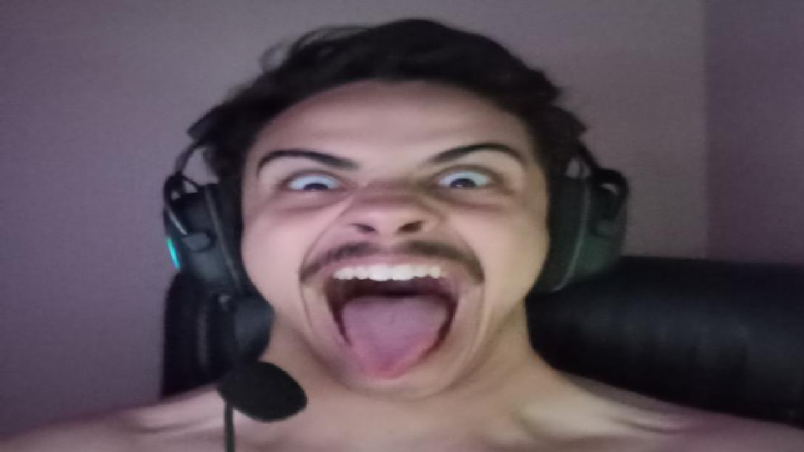

Esta é a HOME, onde voçê irá encontrar o N.V Trabalhos(O local onde uso para dar upload nas atividades do Ciniro) e o MELHOR E MAIS VERDADEIRO SITE DE NOTÍCIAS DE NIGHT CITY!
Trabalho requerido pelo professor Ciniro e realizado pelo aluno Mark Stembark, 4 semestre de eng comp em bambui.

e sim... todos os futuros sites de treino ou implementação serão sobre meu hiperfoco em Cyberpunk.